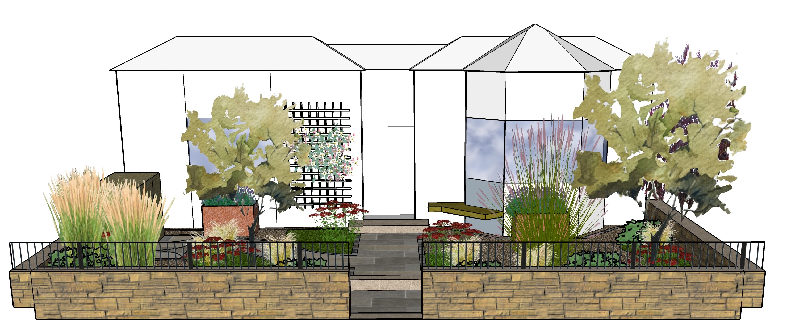
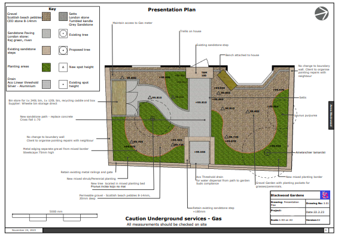

Garden Design Process
This is how we do it.
Consult
The first step is to meet you, see the garden space and understand what you require. This will form the brief for the design.
Survey and site Analysis
A detailed survey of the garden is essential to creating your new space. The survey can be done by a surveyor, or by ourselves depending on how complex the project will be.
 Example of garden survey and site analysis
Example of garden survey and site analysis
Concepts
The is the initial design drawn to scale. It will show the key elements of the garden, the movement and flow around the space and will be presented with mood boards, which may suggest key plants, materials and features. 3D models of the garden can be created to help you visualise your new garden space. Example of 3D garden model
Detailed design stage
Following your approval of the initial garden design, the next step is to complete the drawings required to be able to build the garden. At this stage, samples will be ordered so materials can be selected and approved. The drawings include a scaled masterplan drawing and other detailed drawings as required, such as ‘setting out’ drawings used by the landscaper.  Example of Masterplan drawing
Build
We work in partnership with professional landscapers and can arrange for them to quote for the garden build. We can supply build specifications, complete documentation for the build (meeting CDM regulations) and liaise with the landscaper before and during the build. We can also conduct site monitoring visits during the build stage so the garden is built as designed.
 Garden in construction
Garden in construction
Planting design and planting
We design the planting for the new garden space. Planting design will detail the plants, spacing and quantities for each area of the garden. This is usually produced after the Masterplan has been completed. We can also source the plants. We will lay out plants prior to planting and plant into prepared borders. Maintenance schedules can also be supplied to help you look after your new garden plants.
 Setting out plants for planting
Setting out plants for planting